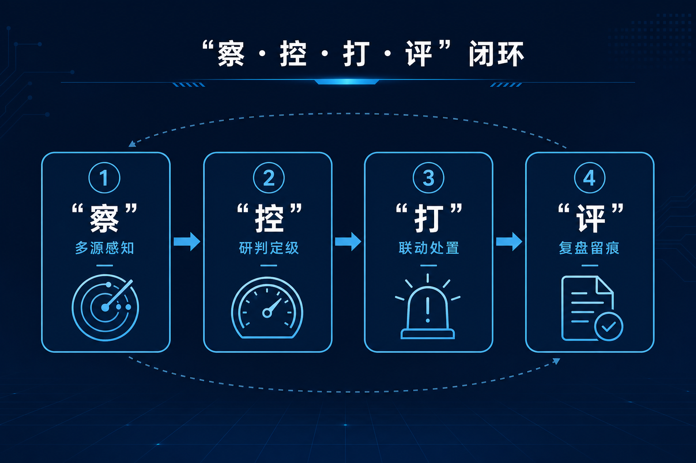

新《民用航空法》施行：低空经济写入上位法，城市治理要从「飞得开」走向「管得住」
导读 本文面向公安及城市低空安全管理部门，围绕新修订《民用航空法》施行后的政策要点、影响对象与落地能力，梳理「飞得开」与「管得住」如何同步推进。
导语：一部法律，正在给城市低空治理定调
新修订《民用航空法》自2026年7月1日起施行。低空经济进入国家基础性法律：空域划分兼顾产业发展，并推动低空监管服务平台建设。法律给方向，城市要建闭环。
2026年7月1日，新修订的《中华人民共和国民用航空法》正式施行。
对做低空的人来说，这不是又一份鼓励文件，而是上位法层面的定调。
空域怎么划？飞行怎么管？平台建不建？城市管理者手里有没有能把登记、监测、处置串起来的系统能力？
据中国民用航空局公布的文本，这部法律把「安全第一、统筹发展和安全」写入总则；空域管理明确划分空域要兼顾低空经济发展需要；发展促进专章提出，要优化低空空域资源配置，推动建设民用低空飞行和应用相关监管服务平台。
低空经济加速发展，黑飞、乱飞、滥飞风险随之上升。法律给出的信号很清楚：飞得开只是一半，管得住才是另一半。
关键在于，从「看得见设备、看不见体系」，走向「发现、研判、处置、留痕」的闭环治理。

一 法律改了什么：为什么说这次不是普通利好？
过去，低空经济更多出现在规划、地方方案、产业文件里。热闹有，层级不够。
现在，它进入了《民用航空法》这类国家基础性法律的表述体系。空域怎么划、飞行怎么管，后续细则和标准会沿着这条线往下长。
与低空强相关的，至少有三处。
• 第一，定位升级。低空不再只是产业口号，而进入法律表述体系，监管与发展将同步细化。
• 第二，空域逻辑写明。划分空域，应当兼顾民用航空和国防安全、低空经济发展需要以及公众利益，使空域得到合理、安全、充分、有效利用。安全与发展并列，不是「先发展、后治理」。
• 第三，平台能力被点名。第二百二十五条提出，国家采取措施优化低空空域资源配置，推动建设民用低空飞行和应用相关监管服务平台，并建立健全适应低空经济发展要求的适航审定、飞行管理等制度和标准。
此外，机场净空保护条款仍然很硬。地方依法划定民用机场净空保护区域；升放气球等升空物体、影响飞行安全的行为，仍在禁止清单里。城市低空不是谁想飞就飞，尤其是机场周边。

低空可以热，但不能热得失控；法律给的是确定性，不是放任。
— 据中国民用航空局公布文本，2026年7月1日起施行
二 三类对象：分别意味着什么？
法律落地，不同角色感受不同。
• 第一，公安和城市低空管理部门。责任边界更清晰。投诉、扰航、大型活动安保、重点区域防护，将更多变成日常工作，而不是偶发专项。需要的是全天候能看见、能定级、能派人、能留痕，而不是等出了事再开会。
• 第二，飞行运营和制造企业。门槛不等于放任。法律鼓励发展，同时把安全运行、适航、管理制度写得很实。合规成本会上升，但规则清晰的市场，通常比灰色飞行更可持续。
• 第三，设备与系统方。机会在体系，不在单点。雷达、光电、反制枪都重要，但城市真正缺的是把多源数据融合起来、按区域等级处置、对接警务流程的平台。设备买了一堆却各自为政，最后仍是「看得见、管不住」。
低空治理的难点，不只是发现无人机，而是管住全过程、追到责任闭环。
三 行业气氛升温：为什么越热闹越要回到法律文本？
法律施行前后，低空经济展会与地方活动密集。公开报道显示，2026国际低空经济博览会计划于7月22日至25日在上海国家会展中心举办；云南等地也在同期办展。
资本和场景都在往前冲。展会热闹，说明产业在加速。
但越热闹，越要回到法律文本里的那几个字：安全第一，统筹发展和安全。
对公安实战而言，低空不再是「偶尔需要管」的特殊空间，而是城市公共安全治理的新场域。不能只靠临时安保、人工巡查、群众举报和事后处置，而要围绕重点区域、重点时段、重点目标，建立常态化监测、预警、处置和追溯机制。
低空经济越发展，城市低空安全治理越要走在前面。
四 城市落地：缺的不是文件，而是闭环能力
法律给的是方向和框架。落到一座城，仍要回答三个问题。
• 第一，解决「纳得进」。飞手、无人机、报备能不能进入统一纳管。
• 第二，解决「看得清」。雷达、无线电、光电、RID 等多源信息能不能对齐，异常飞行能不能自动定级。
• 第三，解决「管得住」。出警、反制、复盘能不能闭环，过程能不能留痕。
行业里把这条链概括成「察 · 控 · 打 · 评」。公安低空管控建设的核心，不是堆设备，而是建闭环。

羽嘉科技面向城市级低空安全，把上述链条做成可运转的业务系统。「猎场一号」平台面向公安及低空安全管理部门日常场景：兼容主流侦测反制设备，按业务流程开箱使用。
有了法，不等于城市已经具备执行力。法提供确定性；执行力，取决于本地能否把监测、研判、处置真正跑通。
低空管控要做到前端看得见、中台管得住、现场处置快、事后追得回。
结 法律定调之后，关键是把低空「管起来」
新修订《民用航空法》把低空经济发展写入上位法，并把监管服务平台建设写进促进条款。
对城市管理者来说，下一步不是再论证「要不要管」，而是回答「怎么常态化管、怎么闭环管」。
唯有实现「看得见、辨得清、管得住、处置得了、留得下痕」，才能把低空公共安全风险前置管控，让低空经济在安全轨道上走远。
—— 关于我们 ——
羽嘉科技，城市级低空安全解决方案提供商，
「猎场一号」警用低空防务智能实战平台研发者。
让低空管理从「被动应对」转向「主动防控」。
免责声明：本文相关信息引自公开渠道（法律文本以中国民用航空局公布为准），仅供行业交流参考，不构成任何决策依据。如有侵权请联系删除。
使用说明：浏览器打开本文件可预览（含配图）。粘贴到公众号后台后本地图片会失效，请按「配图/配图清单.md」顺序重新上传：封面用 00-封面.png，正文依次插入 01→02→03。